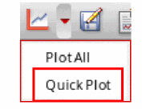
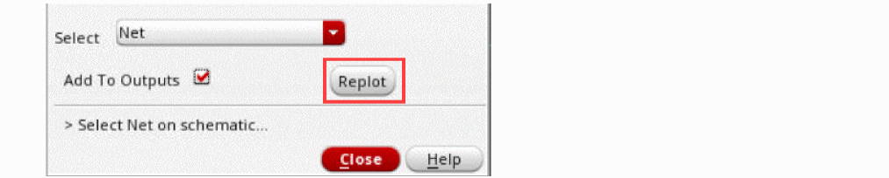
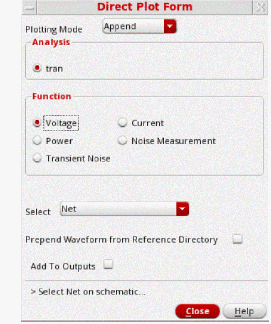
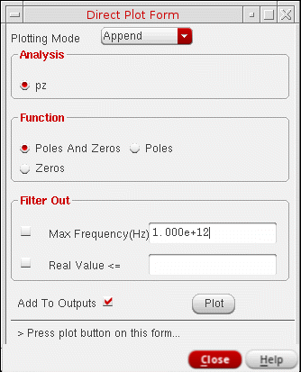
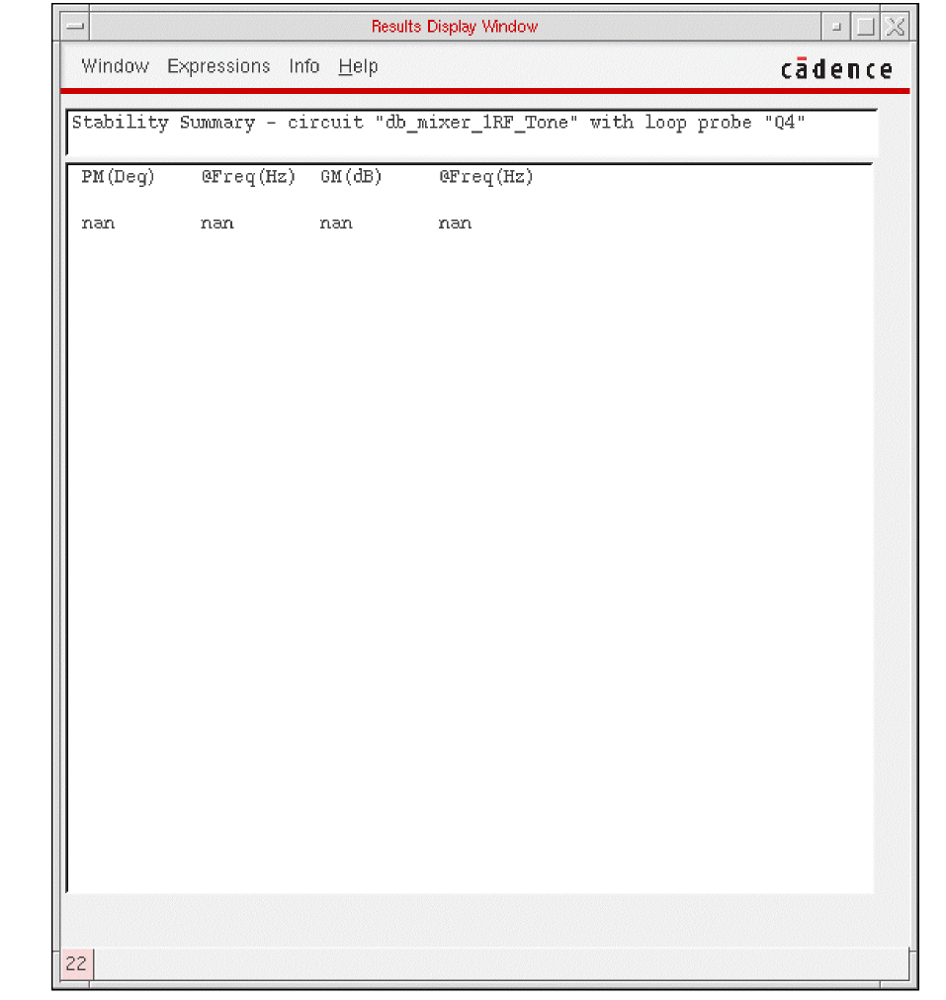
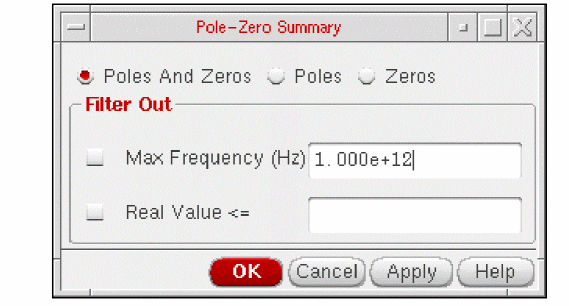

9
Plotting and Printing
This chapter shows how to print and plot simulation data.
- Using the Plot Output Commands
- Using the Direct Plot Commands
- Printing Results
- Printing Components
- Using SKILL to Display Tabular Data
- Annotating Simulation Results
After the simulation run is complete and results are displayed on the Value column of the Outputs Setup tab (for single-point runs) or on the Result tab (for multi-point runs), you can use the Virtuoso Visualization and Analysis XL tool to plot and analyze these results. If the Plot check box in the Outputs Setup is selected, the results are automatically plotted. If only the Save check box is selected, but the result is a waveform, you can manually plot the output waveform. You can use one of the following ways to select and plot simulation results in the Virtuoso Visualization and Analysis XL graph window:
- In the Virtuoso Visualization and Analysis XL Calculator, use the plot icon to plot waveforms.
- In the Results Browser, click right on a node that contains waveforms.
- In the ADE Explorer window, use the Outputs – To Be Plotted – Select On Design command to select nets and terminals in the schematic. Use commands in the Results – Plot Outputs menu to display the graphs for the selected analysis type.
- In the ADE Explorer window or in the schematic, use the Results – Direct Plot command to select nets and terminals in the schematic and to plot a function immediately.
If you set up the Outputs Setup tab in ADE Explorer, with nets to be plotted, and click the Plot Outputs icon during an analysis run, the graph window will pop up and plot the outputs.
Therefore, you get a snapshot of the simulation run upto that time point. You can also use the Calculator or the Results Browser to plot outputs.
Setting Plotting Mode
The ADE Explorer provides different plotting modes. You can choose a plotting mode depending on your requirements to save and compare plots of different simulation results.
The Plotting toolbar provides the following two options to choose how to plot the results:
Plotting Mode
You can choose the following plotting modes:
- Append: Appends the new graph to the existing graph.
- Replace: Replaces the existing graph with the new graph. This is the default option.
- New SubWin: Plots the new graph in a new sub window.
- New Win: Plots the new graph in a new window.
You can select the plotting modes for automatic plotting from the Direct Plot, the Virtuoso Visualization and Analysis XL Calculator and the Results Browser windows also.
ADE Explorer Plotting/Printing Options Form
To set the ADE Explorer printing and plotting options, do one of the following:
- Choose Results – Plotting/Printing Options.
-
Select the plotting button (
) on the Plotting toolbar.
The ADE Explorer Plotting/Printing Options form appears.
You can use this form to set the printing and plotting options.
See the following topics for assistance:
Specifying the Default Plotting Option
You can specify the default plotting option to be used for the automatic plotting of results after a simulation run is complete and also used to specify which plotting option is used when you click the Plot all waveforms  button on the Results tab.
button on the Results tab.
To specify the default plotting option,
-
In the ADE Explorer Plotting/Printing Options form, in the Plot group box, select the plotting option from the Plotting Option drop-down list.
Select To Disable automatic plotting of results after the simulation run. This is the default option.
Automatically plot outputs after the simulation run. For every subsequent simulation run, a new graph replaces the existing graph. You can choose to append the new graph to the existing graph of the previous simulation run or plot it in a new window using the Plotting Mode drop-down list.
When this option is selected, any customization done in the Virtuoso Visualization and Analysis XL graph windows that are currently open, such as setting up traces, colors, or zoom levels, are not reused. Every time a graph is plotted, the default settings are used.
Plot the results by updating the existing graphs in the Virtuoso Visualization and Analysis XL graph window that is already open. Use this option when you want to save and reapply graph and trace settings on the plots that you want to review across different simulation runs.
For more details on how the graphs are refreshed, refer to Refreshing Graphs.
You can also configure the default plotting option by using the plotType environment variable.
Specifying the Outputs that Need to be Plotted
To specify the outputs that need to be plotted automatically after the simulation finishes, do the following in the Plot group box
| Select | To |
|---|---|
Specifying the Default Plotting Mode
To specify the default plotting mode, do the following:
-
In the Plot group box, select the plot mode from the Plotting Mode drop-down list.
For more information about plot modes, see Plotting Mode.
Specifying Annotations for the Graph Window
To specify annotations for the graph window, do the following:
-
Select one or more of the following Annotations check boxes:
- Design Name — Annotates design name in the title banner of the waveform window.
- Simulation Date — Annotates date and time of simulation in the title banner of the waveform window.
- Temperature — Annotates simulation temperature in the plot area of the waveform window.
- Design Variables — Annotates design variables and their values in the plot area of the waveform window.
- Scalar Outputs for Single-Point Simulation — Annotates scalar values for a single-point simulation.
- Spec Markers — Annotates spec markers in the plot area of the waveform window.
- Click Apply.
Here is a waveform window with all annotations applied:
Specifying Histogram Options
To specify the histogram options, do the following in the Histogram Options section:
-
In the Type drop-down, specify the type of histogram to be plotted. The available types are
standard,pass/fail,cumulative line, andcumulative box. The default type ispass/fail. -
In the Number of Bins field, specify the bins. Default value is
10. - Select the following checkboxes:
Specifying Maestro Plotting Template Options
To enable or disable default maestro plotting template options, do the following in the Maestro Plotting Template Options group box:
Specifying Whether to Save Quick Plot Data
To save the data for a quick plot, select the Save Quick Plot data check box in the Quick Plot section. This field is enabled by default. When this field is not selected, the Quick Plot option does not work for the output signals or expressions.
Specifying the Default Direct Plot Options
To specify the default direct plot mode options, do the following in the Direct Plot drop-down:
-
Select the plot mode from the Plotting Mode drop-down list.
For more information about plot modes, see Plotting Mode. - Select one of the following Direct Plots Done After options:
- Click Apply.
Specifying When to Print Results
To specify when to print results to the Results Display Window, do the following:
Enabling the Distributed Plot Service
To enable the distributed plot service:
- Select the Enable Distributed Plot check box.
- (Optional) In the Linger Time (seconds) field, specify the time in seconds for which the distributed plot process waits before exiting when there is no active plotting window is visible. The default value is 60 seconds. It is recommended not to set the linger time to less than 30 seconds.
- Click Apply.
Distributed Plot Commands
The following table describes the distributed plot commands that are displayed when you click the arrow next to the icon in the Run toolbar of ADE Explorer.
These commands become unavailable if you disable distributed plot. The icon indicates that distributed plot is disabled.
Related Topics
Refreshing Graphs
Graphs can be refreshed using the Refresh option in the Plotting Options drop-down box in the
You can use this option to review graphs across different simulation runs. For example, consider you want to run multiple simulations with different values of the design variable CAP. In the first run, plot CAP for 800f. After the simulation results are plotted in the graph, customize the plots, as shown in the figure below.
In the next run, use CAP=200f to run the simulation. Using the Refresh option, the simulation results are updated in the same graph.
The following sections describe how the graphs are refreshed using the Refresh option in different scenarios:
- Refresh Plotting with Varying Analysis
- Refresh Plotting with Varying Outputs
- Refresh Plotting with Parametric Simulation
Graph Settings Supported by the Refresh Plotting Mode
The Virtuoso Visualization and Analysis XL graph window saves and maintains the following settings for the graphs that are generated for a common set of variable combinations across simulation runs:
- Trace color, type, style, width, or symbols
- Visibility status of graphs
- Axes settings
- Pan and zoom settings
- Graph layout
- Strip layout
- Makers and marker locations
Graph Settings Not Supported by the Refresh Plotting Mode
Currently, the following graph settings are not supported:
- Swapping of sweep variable on the X-axis
- Addition of a new graph window
-
Any signal, expression or measurement that you directly added to the graph and is not specified in the Outputs Setup tab in ADE Explorer window.To retain additional or derived graphs and their settings, you can send plot from the graph to the ADE Explorer Outputs Setup tab by using the Send to ADE command on the shortcut menu of the graph. For more details, refer to Sending Traces to ADE in Virtuoso Visualization and Analysis XL User Guide.
Refresh Plotting with Varying Analysis
The following table describes how graphs are refreshed when analysis are varied across different simulation runs:
| Analysis Variation | Effect on Graph Settings |
|---|---|
Refresh Plotting with Varying Outputs
The following table describes how graphs are refreshed when outputs are varied across different simulation runs:
| Analysis Variation | Effect on Graph Settings |
|---|---|
Refresh Plotting with Parametric Simulation
If you perform parametric simulation runs, the graphs are updated with new simulation results for common sweep values between subsequent runs. Traces corresponding to new sweep values are added to the same graph. Traces corresponding to unmatched sweep values are deleted.
For example, set the variables as shown below.
The graph plotted in this case includes plots for all four sweep values for CAP, as shown below.
For the next simulation run, change the sweep values for CAP to 2.5:4.8:3.6:5.2. Note the change in the values of CAP for which the simulation is run (mismatch values are underlined), as shown below.
Values of CAP in the first run: 1.2, 2.5, 3.0, and 4.8
Values of CAP in the second run: 2.5, 4.8, 3.6, and 5.2
With the Refresh plotting, the traces corresponding to CAP = 2.5 and 4.8 are updated with new simulation data. Traces corresponding to CAP = 1.2 and 2.0 are removed. Traces corresponding to CAP = 3.6 and 5.2 are added.
Unsupported Scenarios of Sweep Variations
In the following scenarios, the graphs for common sweep values for the swept variables are not refreshed:
- If you run parametric simulations after you run normal simulations in ADE Explorer window, graphs are not refreshed.
-
Change from single sweep variable to multiple sweep variables. For example, in the first simulation run, you sweep variable
x, and in the subsequent runs, you sweep variablesxandy. -
Change in the sweep variable. For example, in the first run, you sweep variable x and in the subsequent runs, you sweep variable
y.
Performing Quick Plotting
When the ADE Explorer setup includes multiple sweep or corner points, or the transient simulations are time-consuming, plotting output waveforms through the Plot All option could consume significant time and memory. In this case, you can use the Quick Plot option to plot outputs faster and with much lesser memory usage (data size <1 percent of PSF XL). The quick plot is faster because it uses a reduced set of data points as opposed to the Plot All option that generates a full view covering all data points. The quick plot compresses data, and therefore, saves memory.
However, quick plots have lower resolution as compared to the full view that is generated using the Plot All option. When you send the quick plot waveforms to Calculator, the full plot data is loaded so that the calculations are not affected. In addition, if you perform any operations on quick plot signals using Results Browser, such as Diff, the output waveform is also of low resolution.
Detail and Detail-Transpose results views. In addition, quick plot can be generated for all signals and expressions except for histograms. The Quick Plot option is disabled when you re-evaluate the results for expression after the simulation run is complete.While running a Monte Carlo simulation, quick plotting is not supported if the Save Waveforms (Simulation Data) check box is not selected on the Monte Carlo options form. In this case, an error message is displayed in CIW.
To generate the quick plot for a selected signal or expression:
-
Right-click the waveform icon for a signal or waveform expression output and choose Quick Plot All.
A quick plot is generated in the Virtuoso Visualization and Analysis XL window for the selected output signal.
To generate the quick plot for all the signals and expressions:
-
In the Plot All drop-down list on the Results tab, click Quick Plot.
The quick plot waveforms for all the signal outputs are generated in the graph window.The quick plots are generated only when the Save Quick Plot Data option is selected on the ADE Explorer Plotting/Printing Options form, which appears when you choose Results – Plotting/Printing Options. If this option is disabled, an error message is displayed in CIW. For more information, see Specifying Whether to Save Quick Plot Data.
The figure below shows the waveforms from normal plot (full view) displayed in red and quick plot displayed in blue for a current signal, /V0/PLUS. The quick plot waveform includes fewer points as compared to the full view. When the full view and quick plot are displayed in the same window in append mode, you can zoom into the plots to compare them and see the differences between them. In addition, notice that the legend of the quick plot is different from the full view, which helps differentiating between the two plots.
The equivalent full data is loaded when you send the quick plot waveform data to Calculator. The loaded waveform is a leaf, for example:
leafValue( IT("/V0/PLUS") "I15.wn" 2 )
In the Results Browser, the signals are displayed in the order they are computed and may not match the order in which they are viewed in the full view data.
The saved quick plot data can be loaded into graph and is located at:
<Interactive>/wavedb/<test>.vqv
You can also generate a full view from the quick plot data. To do this, right-click the quick plot waveform and choose Quick Plot Expand to – New Window/New Subwindow/Current Window.
Using the Plot Output Commands
To plot the outputs, choose one of the below listed commands in the Results – Plot Outputs menu.
|
Plots the waveforms for expressions you define in the Setting Outputs form. For more information, see Saving Output Expression. |
Plotting the Current or Restored Results
To plot the most recent results in the graph window:
-
Choose Outputs – To Be Plotted – Select On Design.
Nodes and terminals that you have already selected are now highlighted. - In the schematic window, select one or more nodes or terminals.
-
Press the
Escapekey when you finish selecting nodes and terminals. -
You can also add a signal or expression manually to the outputs setup.
The terminal type for the added signal or expression is determined by the Terminal Selection Type set in the Plotting/Printing Options form.
For example, manually add an instance terminal/I0/M3/Bto the outputs setup. Depending on the specified Terminal Selection Type, the following four outcomes are possible:-
Current: Implies that a
signal(I)is added. -
Voltage: Implies that a
signal(V)is added. -
Both: Implies that a
signal(I)andsignal(V)are added. -
Prompt: In this case, the following form is displayed, where you can select the type of signal to save.
If an expression is created on a non-existent net or terminal or if the expression contains signals that do not exist in the schematic, the expression is highlighted in yellow in the outputs setup.
-
Current: Implies that a
-
Choose a Results – Plot Outputs command in the ADE Explorer window.
The system plots the results you selected in the current graph window or opens a new graph window if one is not open.
To plot all of the available results at once,
When you choose Outputs – To be Plotted – Select on Design, and then select an iterated instance in the schematic, the Select instTerm IN on iterated inst form is displayed.
If you select a bus signal, the Select bit from bus form is displayed.
These forms enable you to select from one to all bits of an iterated item. When you select the top element in the list box, all the individual bits are selected. You can also select an individual bit with the left mouse button.
Ctrl-Left mouse will toggle selection of an item. Shift-Left mouse will select all items between the last selected item and the current item.Plotting Parasitic Simulation Results
When you plot the results of a parasitic simulation, only terminals and device pins can be mapped from the schematic to the extracted view.
To select results in the schematic while
- In the ADE Explorer window, choose Outputs – To Be Plotted – Select on Design.
-
In the schematic, select a terminal or pin, or a wire near a terminal or pin.
If you select a point in the middle of a wire, the system chooses the nearest terminal or device pin and you might not get the right data.
The system draws anXto mark the point you selected. -
Choose a Results – Plot Output command.
The color of the waveform matches the color of theX.
You cannot probe nets that connect only sources and loads because these nets do not exist on the extracted view. You also cannot probe nets between parasitic components that were removed by selective annotation because these nets were removed when the selected view was built.
Using the Direct Plot Commands
You can plot common waveforms quickly in the ADE Explorer window using the Direct Plot commands. With these commands, you do not need to use the calculator to create common expressions and you do not need to add the nets or terminals to the plot set.
- Choose Results – Direct Plot – Main Form. This brings up the unified Direct Plot Form that changes dynamically depending on the analysis that was performed.
-
Choose the Results – Direct Plot commands. The commands are as follows:
-
Choose a command from the Results – Direct Plot menu.
If necessary for the command, a form appears.
The graph window opens. If a graph window was already open, it becomes active. -
Look in the schematic window for a prompt.
The prompt tells you what to select in the schematic. -
Select the signals necessary for the function and press the
Escapekey.
The system plots the signals. The system shuffles windows automatically, so that the graph window is in front.
There are two modes for the Direct Plot commands:
- Plotting one signal at a time immediately after you select the signal
-
Plotting several signals together after you press the
Escapekey
-
Choose Results – Plotting/PrintingPlotting/Printing Options.
The ADE Explorer Plotting/Printing Options form appears. For more information about the form, see ADE Explorer Plotting/Printing Options Form.
- Choose the required options from the Direct Plot group box and click OK.
Using the Direct Plot Main Form
When you choose Results – Direct Plot – Main Form, the following form appears:
For DC
- Choose Results – Direct Plot – Main Form. The Direct Plot Form appears.
-
Select dc in the Analysis section.
The Direct Plot Form is updated, as shown below:
- Specify the Plotting Mode. You can specify:
-
The functions that are available are: Voltage, Voltage Ratio, Current, Current Ratio, Power, Power Ratio, Transresistance, and Transconductance. Based on the selected function and available data, the form changes dynamically to display the applicable options.
Enable Add To Outputs to add expressions for the results to the outputs section and plot in the mode that you selected.On deselecting this check box, it turns into a button that can then be clicked to add the expressions for the results to the outputs section. If this check box is reselected, on clicking Replot, the results are plotted as well as added to the outputs section.Based on the selected function and available data, the form changes dynamically to display the applicable options.- For Voltage, choose the nets and terminals to plot. You can select one of the following options to display the graphs for the selected analysis type.
- For Current, choose the terminals to plot. You can select one of the following options to display the graphs for the selected analysis type.
-
For Power, choose the nets and terminals to plot. You can select one of the following options to display the graphs for the selected analysis type.
- Terminal: Lets you select instance terminals from the schematic.
- Terminal and V-Reference Terminal: Lets you select positive and negative instance terminals from the schematic.
- Instance with 2 Terminals: Lets you select an instance with two terminals from the schematic.
- Total Power: Plots the total power of the circuit.
- Instance: Lets you select instances from the schematic.
- For Transresistance, choose the nets and terminals from the schematic. This function gives you the transresistance of the selected net voltage over the selected device node current. From the Select drop-down list, select one of the following options.
- For Voltage Ratio, choose the nets and terminals from the schematic. This function gives you the voltage ratio of two net voltages, or a pair of differential net voltages. From the Select drop-down list, select one of the following options.
- For Current Ratio, choose the terminals from the schematic. This function gives you the current ratio of two instance terminal currents.
-
For Power Ratio, choose the nets and terminals from the schematic. From the Select drop-down list, select one of the following options.
- Numerator Net and Denominator Terminals: Lets you select the numerator and the denominator instance terminals from the schematic.
- +-Numerator and +- Denominator Terminals: Lets you select pairs of differential numerator instance terminals and denominator instance terminals from the schematic.
- Num. and Denom. Instances with 2 Terminals: Lets you select the numerator and denominator instances with two terminals from the schematic.
- For Transconductance, choose the nets and terminals from the schematic. This function gives you the transconductance of the selected device node current over the selected device net voltage. From the Select drop-down list, select one of the following options.
For AC
- Choose Results – Direct Plot – Main Form. The Direct Plot Form appears.
-
Select ac in the Analysis section.
The Direct Plot Form is updated, as shown below:
- Specify the Plotting Mode. You can specify:
- The functions that are available are: Voltage, Current, Current Ratio and GD. Based on the selected function and available data, the form changes dynamically to display the applicable options.
-
Choose the nets and terminals to plot. You can select Terminal, Net, Differential Nets or Instance with 2 Terminals in the schematic to display the graphs for the selected analysis type.
- Choose the appropriate Modifier to specify the data or plot format.
- Enable Add To Outputs to add expressions for the results to the outputs section and plot in the mode that you selected.
For Transient Results
- Choose Results – Direct Plot – Main Form. The Direct Plot Form appears.
-
Select tran in the Analysis section.
The Direct Plot Form is updated, as shown below:
 - Specify the Plotting Mode. You can specify:
-
The functions that are available are: Voltage, Current, Power, Noise Measurement, and Transient Noise.
Based on the selected function and available data, the form changes dynamically to display the applicable options.-
For the Voltage, Current, and Power functions, choose the net or terminal to plot. These functions are the same as those available in the Direct Plot form For DC analysis.
The Prepend Waveform from Reference Directory option can be used for appending multiple checkpoint/restart transient waveforms together to enable you to view complete waveforms. Specify the reference results directory(s) in the field. The signal you choose in your direct plot will then be accessed from the reference directory. -
For the Noise Measurement function, specify the values of the options that appear in the Histogram section in the form.See Histogram Plots for Transient Noise Analysis for more information.
-
For the Transient Noise function, specify the values of the following additional options that appear in the form and choose the net or instance to plot.The PSD function generates a PSD waveform for the specified net or instance, and the PN function generates a waveform of the transient phase noise for the specified net or instance.
Coherent GainFor more information about the options required to plot these waveforms, see the section PSD or PN in the Virtuoso Visualization and Analysis XL User Guide.
If no data is available for the selected function, a corresponding message is displayed in the form.

-
For the Voltage, Current, and Power functions, choose the net or terminal to plot. These functions are the same as those available in the Direct Plot form For DC analysis.
For Noise Results
Noise figure is calculated by Spectre if a port is selected as the input source for noise analysis. If a port is not selected as the input, noise figure data is not available.
- Choose Results – Direct Plot – Main Form. The Direct Plot Form appears.
-
Select noise in the Analysis section.
The Direct Plot Form is updated, as shown below:
- Specify the Plotting Mode. You can specify:
- Select the noise parameter function that you want to plot from the Function group box. Based on the selected function and available data, the form changes dynamically to display the applicable options.
-
Select the Signal Level that you want to plot. By default, ADE Explorer plots the
VN2signal in the Virtuoso Visualization & Analysis XL window. You can plot theVNsignal by selecting the V / sqrt(Hz) radio button from the Direct Plot form. - Choose the appropriate Modifier to specify the data or plot format. Magnitude radio button (the default setting) plots the magnitude of the selected signal and the dB20 radio button plots the magnitude in dB.
- Select Add To Outputs check box to add expressions for the results to the outputs section and plot in the mode that you selected.
-
Click Plot to view the results in the Virtuoso Visualization & Analysis XL window.
- Click OK.
For Noise Separation
In addition to the total output noise, individual noise contributions can be plotted if Noise Separation is enabled in the Choosing Analyses form for Noise Analysis.
To plot the noise separation results,
- Choose Results – Direct Plot – Main Form. The Direct Plot Form appears.
-
Select noise separation in the Analysis section.
The Direct Plot Form is updated, as shown below:
- Specify the Plotting Mode. You can select one of the following modes:
-
In the Function section, select the noise separation function that you want to plot. You can select one of the following functions:
- Instance Output — Plots the noise contribution of the instances.
- Instance Source — Plots the noise sources of the instances.
- Source Output — Plots the noise contribution of the primary noise sources.
- Primary Source — Plots the primary noise sources.
- Src. Transfer Func — Plots the square of the transfer function square of the primary noise sources.
Based on the selected function and available data, the form changes dynamically to display the applicable options. - Based on the selected function, the signal level is also detected automatically.
- Choose the appropriate modifier to specify the data or plot format. Power (the default setting) plots the power of the selected signal. dB10 plots the magnitude in dB.
-
In the Filter section, choose filtering details.
The Include All Types option should be selected. But, if you just want the noise from specific types of noise generators, you can select them from the list box. Also, specify the instances to be included or excluded particular in your summary. -
In the Truncate section, choose truncation details to shorten your summary.
You can shorten your summary by specifying how many of the highest contributors to include in the summary. - Select the Add To Outputs check box to add expressions for the results to the outputs section and plot in the mode that you selected.
- Click Plot to view the results in the Virtuoso Visualization & Analysis XL window.
- Click OK to close the form.
For Stability Results
- Choose Results – Direct Plot – Main Form. The Direct Plot Form appears.
-
Select stb in the Analysis section.
The Direct Plot Form is updated, as shown below:
. - Specify the Plotting Mode. You can specify:
-
The functions that are available are: Loop Gain, Stability Summary, Phase Margin, Gain Margin, PM Frequency and GM Frequency. Based on the selected function and available data, the form changes dynamically to display the applicable options.
-
When you select Loop Gain, the form re-displays to show the Modifier section.The loop gain output is a complex waveform and you can select it to plot Magnitude, Phase or both (Magnitude and Phase). Whenever you choose to plot Magnitude, the Magnitude Modifier section appears on the form. You can select None, dB10 or dB20, as needed. Whenever you plot both the magnitude and phase, the graph window changes to the strip mode. It reverts back to the composite mode for other plot operations.There is a difference between the ADE Explorer and Spectre definition of loop gain. For the feedback circuit shown below:The closed loop gain is defined as:
The Spectre output defines loop gain as the product AF, while others (like the ADE Explorer CalculatorphaseMarginandgainMarginfunctions) define -AF as the loopGain. Therefore, to obtain the same results from ADE Explorer, you need to negate the Spectre’s loopGain as illustrated below:
gainMargin( -1 * getData( "loopGain" ?result “stb” ), 1) phaseMargin( -1 * getData( "loopGain" ?result “stb” ) ) -
Phase Margin, Gain Margin, PM Frequency and GM Frequency constitute the margin data. This information is calculated from the loop gain data for the circuit. The information is only available when frequency is swept in the stability analysis and the swept range is sufficient to calculate the values. When the selected margin data is scalar the values are displayed on the form itself.When the swept frequency range is not sufficient to calculate the selected margin data an error is reported in the Direct Plot Form and the Plot and Add to Outputs button are not available.When frequency is not swept in the stability analysis and you choose any of the margin data functions an error is reported in the Direct Plot Form and the Plot and Add to Outputs button are not available.
-
Selecting Stability Summary displays all the margin data collectively on the form, when the data is scalar. You do not have the facility to plot or add the four outputs when this function is chosen. Use the individual margin data function for this operation.When frequency was not swept or the margin data is not scalar an appropriate error is reported in the Direct Plot Form and the Plot and Add to Outputs button are not available.
-
When you select Loop Gain, the form re-displays to show the Modifier section.The loop gain output is a complex waveform and you can select it to plot Magnitude, Phase or both (Magnitude and Phase). Whenever you choose to plot Magnitude, the Magnitude Modifier section appears on the form. You can select None, dB10 or dB20, as needed. Whenever you plot both the magnitude and phase, the graph window changes to the strip mode. It reverts back to the composite mode for other plot operations.
-
Enable Add To Outputs and plot in the mode that you selected.
All other parts of the Direct Plot form work the same way as they do for other analyses. Refer to the Spectre Circuit Simulator RF Analysis User Guide for details.
This form handles parametric (family) data. The Loop Gain would be a set of curves for family data. Similarly for non-parametric data, Phase Margin and Gain Margin will be scalars. A horizontal straight line will be plotted for them.
For Pole Zero Results
Once you run a simulation for Pole Zero analysis, you can use the Direct Plot main form to view the poles and zeros plotted on the real/imaginary plane.
- To open the Direct Plot Form, select Results – Direct Plot – Main Form.
-
Select pz in the Analysis section.
The Direct Plot Form is updated to display the applicable functions and options:
 -
Select the option, Poles if you want to plot only poles, Zeros if you want to plot only zeros and Poles and Zeros if you want to plot both poles and zeros.
-
Set the required options in the Filter Out section and click OK. This section provides a combination of filtering mechanisms that you can select in order to plot the poles and zeros. These are:
- Max Frequency: This option enables you to filter out poles and zeros that are outside the frequency band of interest (FBOI) and that do not influence the transfer function in the FBOI. The default value is that specified in the fmax field in the Pole-Zero Options form. Only poles and zeros whose magnitudes exceed the frequency value specified are filtered out.
-
Real Value:
This option enables you to specify the real part of the frequency. Only poles and zeros whose real values are less than or equal to the real value specified are filtered out.
- Enable Add To Outputs to add expressions for the results to the Outputs Setup and plot in the mode that you selected.
-
Click Plot to view the results in the Graph Window:
Poles and zeros are plotted in scatter mode. This implies that poles and zeros are plotted individually but not connected. Poles are represented by the symbol x and zeros by the symbol o. The complex data is plotted with poles and zeros.
Non-Swept Parameters
For the non-swept case, the result of Pole Zero analysis will be two waveform objects, one representing poles and another representing the zeros. The two wave objects are plotted in the same color however, poles will be represented by the symbol x and zeros by the symbol o.
Swept Parameters
For swept parameter Pole Zero Analysis, it is possible to create the root-locus plot. Instead, the poles and zeros are plotted corresponding to each Swept Parameter value.
For Transfer Function
To plot the transfer function,
- Choose Results – Direct Plot – Main Form. The Direct Plot Form appears.
-
Select xf in the Analysis section.
The Direct Plot Form is updated, as shown below:
- Specify the Plotting Mode. You can specify:
- Choose either Voltage Gain or Transimpedance if you selected output voltage for the transfer analysis, or Current Gain or Transconductance if you selected output current for the transfer analysis.
- Specify the modifiers as needed.
-
Select either the instance or instance terminal in the schematic.
The graph window redisplays, showing the new plot.
To replot with modifications, make changes to the specifications on the XF Results form and click Replot.
For S-Parameter
A typical S-parameter direct plot shows a parameter function plotted against frequency, based on a pair of psin elements that define an input and an output circuit port.
You define S-parameter direct plots with the
By default, the plots appear in the current Virtuoso Analog Design Environment graph window or subwindow. The current subwindow has a rectangle around its window number (in the upper-right corner). To use a different subwindow, select it before beginning the direct plot procedure. If no graph window or subwindow is open, this plot function automatically opens one.
-
To plot the results, choose Results – Direct Plot – Main Form.
This command automatically opens a graph window (unless one is already open), the design schematic (unless it is already open), and the Direct Plot Form. -
Select sp in the analysis section.
The Direct Plot Form is updated, as shown below:
For detailed information about the form, see S-Parameter Results.
- Specify the Plotting Mode. You can specify:
-
Click the radio button for the S-parameter or noise-parameter function you want to plot.
A brief description of the function appears below the buttons, and the bottom of the form changes to show options for the function.Some functions are defined only for two-port circuits. If you choose a function that is not available for your circuit data set, a warning message appears at the bottom of the form. Click a button on the figure for information about a function. If you need an equation that is not represented on the form, use the calculator to build, evaluate, and plot it. - Choose the appropriate Plot Type and Modifier to specify the plot type and the data or plot format.
-
Specify and draw the plot.
For S, Z, Y, or H parameters (shown as SP, ZP, YP, and HP on the form), generate plots for ports 1 through 3 by clicking the appropriate parameter button at the bottom of the form. To generate plots for any higher-numbered ports, use the cyclic fields beside the buttons to specify the output and incident ports. Then click the S, Y, Z, or H button that is next to the cyclic field to plot.
S-Parameter Probing
Select sp sprobe port in the Analysis group box of the Direct Plot form.
The following fields are displayed.
- From the Select Sprobe drop-down list, select an sprobe.
- From the Select Port Direction drop-down list, select one of the following options.
- Select a function from the Function group box.
- Select a plot type from the Plot Type group box.
- Select a modifier from the Modifier group box.
- Click Plot to plot the wave.
For Loop Finder
To highlight the nets within a loop,
- Choose Results – Direct Plot – Main Form. The Direct Plot Form appears.
-
Select lf in the Analysis section.
The Direct Plot Form is updated, as shown below:
- Choose a loop from the loops table. The circuit nodes (nets) within the selected loop are displayed in the nets table, along with their impedance value. If you want all the nets within a particular loop to be highlighted, double click the loop.
- In the Loops Sort By field, you can specify a sorting criteria for the loops displayed in the loops table. You can sort the loops by frequency or damping factor, in ascending or descending order.
-
In the Select Nets From (Ohm) and To fields, specify the minimum and maximum impedance for the nets to be displayed. All the nets with an impedance lying outside the specified range are excluded from the nets table.
If only the minimum impedance is specified in the Select Nets From (Ohm) field, all the nets with an impedance greater than the specified impedance are displayed. And, if only the maximum impedance is specified in the To field, all the nets with an impedance lower than the specified impedance are displayed. -
Choose the nets to be highlighted from the nets list box. To select multiple nets, press the
Ctrlkey and select the nets, or (for contiguous selection) press theShiftkey and select the nets. -
Click Highlight. The selected nets are highlighted in the schematic, in red, as shown below:
- Click OK to close the form.
Printing Results
To print text results and reports to the Results Display Window, do the following:
-
On the Results tab, right-click in a column and choose Print.
A submenu appears to display only those functions that apply to the current results are available for selection. -
Choose a Results – Print menu command in the ADE Explorer window.
The Results Display Window appears:
For guidance on using the Results Display Window to perform tasks, see the following sections.
Printing Results
To print the results in the Results Display Window either in hardcopy or to a file,
-
Choose Window – Print.
The Print form appears.

-
Choose the correct window number from the Print from window cyclic field.
This is the window containing the contents you want to print. - Type a value in the Number of Characters Per Line field.
-
Choose either the Printer or File radio button in the Print To field.
You must type a filename if you choose File. - Click OK.
Saving State from the Results Display Window
You can use Save State and Load State capability to save the current setup of display options for printing waveforms such as printing format, setting a printing range if the amount of data is too large, printing at a certain interval, and changing the order of the display. You can save the state of the window into a file. Later if you run another simulation and do Load State, the new data can be loaded back and displayed as you specified when you saved the state. Save State and Load State are applicable only to waveforms (that is, expressions that can evaluate to a waveform). If you print a single number, like a node voltage, these commands are disabled. You get a message stating this value is not a waveform and cannot be loaded back.
To save the contents and format of a Results Display Window,
Loading State in the Results Display Window
To load a window state that you previously saved,
-
Choose Window – Load State.
The Load Window form appears.
- Type the name of the saved file in the field.
- Click OK.
Updating Results in the Results Display Window
To update the Results Display Window with results from a new simulation,
This updates the data using the current window setup. Update Results is applicable only to waveforms (that is, expressions that can evaluate to waveforms). If you print a single number, like a node voltage, this command is disabled.
Making a Window Active
There is no limit to the number of Results Display Windows you can have open, but only one window is active at a time. All printouts go to the active window.
Editing Expressions
You can edit any expressions that evaluate to waveforms (for example, DC operating parameters, model parameters, and transient operating parameters). If you print only one value, the edit menu choices are not available. The editing commands operate on only the last table in the active Results Display Window.
To edit expressions in the print window,
-
Choose Expressions – Edit.
The Edit window appears.
- Edit the expressions using the form buttons and fields.
- Expressions - The field to the left of the equal sign shows the aliased name of the expression to the right. Naming expressions is optional and the field might be blank. If aliases are used, they are shown in the list box and the title line of the print window list box.
- Specify - Retrieves the expression in the calculator buffer and places it into the edit field.
- Add - Adds the expression in the edit field to the list box.
- Change- Replaces the selected expression in the list box with the one in the edit field.
- Delete- Deletes the selected expression from the list box.
- Undelete- Lets you undo the last delete.
- Move Up - Moves the display of the selected expression one step to the left. If the expression is already the leftmost, it is moved to the rightmost.
- Move Down- Moves the display of the selected expression one step to the right. If the expression is already the rightmost, it is moved to the leftmost.
- Sort- Sorts the selected expression so that the value increases down the column.
- Reverse Sort - Sorts the selected expression so that the value decreases down the column.
- Clear Sort - Reverts to the default order.
-
Clear Select - Clears the selection in the list box. Also, you can clear entries from the list box by clicking on the entry while holding down the
Controlkey.
Setting Display Options
To change the display options,
-
Choose Expressions – Display Options.
The Display Options form appears.
- Type the values into the form and select a format.
- Step size- Specifies the interval for printing data.
- Display from, to- Specifies the range of data to print. If from is left blank, the data is printed from the beginning. If to is blank, the data is printed to the end. You can set the print range only after printing data.
- Format- Controls the format of the data printed. The possible formats are Engineering Suffix (default), Engineering, and Scientific. For example, you represent 0.0001 as 0.1m (engineering suffix), 0.1e-3 (engineering), or 1e-4 (scientific).
- Linear/Log- Specifies whether the scale used for step size is linear or logarithmic.
- Column width/spacing- Changes the number of characters allowed for column width and spacing. The default width is 14 characters. The allowed range is 4 to 20 characters. The default spacing is 4 and the allowed range is 1 to 10.
- Number of significant digits- Specifies the number of significant digits to be printed. The default is 4 digits, and the allowed range is 2 to 10.
Displaying Output Information
To display output information, choose Info – Show Output.
Output names are truncated to fit into columns if they are too long. The Show Output command shows the output names in full.
Specifying Results to Print
Before you can print results, you need to specify which results to print.
To print results for the current simulation or for a selected data file,
- Choose a print command from the Results menu.
-
Select a node in the Schematic window.
The Results Display Window shows
Each time you click a node in the Schematic window, information about the node is added to the Results Display Window.
Printing Components
- Printing DC Operating Points
- Printing Transient Operating Points
- Printing Model Parameters of Components
- Printing Noise Parameters of Nodes or Components
- Printing DC Mismatch Summary
- Printing AC Match Summary
- Printing Stability Summary
- Printing Pole Zero Summary
- Printing DC Node Voltages
- Printing Transient Voltages
- Printing Sensitivities
Printing DC Operating Points
To print the DC operating points of the components in your circuit,
- Choose Results – Print – DC Operating Points.
-
Move your cursor into the Schematic window.
The CIW prompts you to select instances for the operating point output. - Click an instance.
If the selected instance is a textual subcircuit, operating points for all devices in the subcircuit will be printed. It may take some time to search for all instances in a textual subcircuit. To disable the feature, set the following environment variable in your .cdsenv:
asimenv.printing printInlines boolean nil
Printing Transient Operating Points
To print the final transient operating points of the nodes or components in your circuit,
- Choose Results – Print – Transient Operating Points.
-
Move your cursor into the Schematic window.
The CIW prompts you to select instances for the transient operating point (OPT) output. - Click an instance or node.
If the selected instance is a textual subcircuit, operating points for all devices in the subcircuit will be printed. It may take some time to search for all the instances in a textual subcircuit.To disable the feature, set the following environment variable in your .cdsenv:
asimenv.printing printInlines boolean nil
Printing Model Parameters of Components
To print the model parameters of the nodes or components in your circuit,
- Choose Results – Print – Model Parameters.
-
Move your cursor into the Schematic window.
The CIW prompts you to select instances for the model parameter output. - Click an instance of a device.
If the selected instance is a textual subcircuit, model parameter for all devices in the subcircuit will be printed. It may take some time to search for all instance in a textual subcircuit. To disable the feature, set the following environment variable in your .cdsenv:
asimenv.printing printInlines boolean nil
Printing Noise Parameters of Nodes or Components
To print the noise parameters of the nodes or components in your circuit,
-
Choose Results – Print – Noise Parameters.
The Select Frequency Value form appears.
If the form does not appear, pressF3. -
In the Frequency field, type the frequency value at which you want the noise parameters to print.
The default frequency is 1K. -
Move your cursor into the schematic window.
The CIW prompts you to select instances for the VNP output. - Click an instance or node.
Noise Summary
To display the noise contribution of the components in a circuit,
- Run a noise analysis simulation.
-
Choose Results – Print – Noise Summary.
Alternatively, right-click any cell in the Test or Output column of the Results tab and choose Print – Noise Summary.
The Noise Summary form is displayed. -
Choose one of the following noise summary types:
- spot noise – Type a frequency in the Frequency Spot (Hz) field.
- integrated noise – Specify a range and weighting option.
-
In the FILTER group box, do the following:
- From the hierarchy level drop-down list, specify the hierarchy levels up to which you want to view the noise contribution results in the Results Display Window.
- Specify the options to include or exclude device types or instances. Refer to the section Specifying Device Types and Instances to Include or Exclude below.
-
If you choose integrated noise, you have the option of using a weighting factor.
The flat weighting factor specifies that the integration be performed on the original unweighted waveform.
The from weight file selection specifies that, before the integration is performed, the noise contributions of particular frequencies in the original waveform be weighted by factors supplied from an input file. The weighting file must have one of the following entries on the first line:db,mag,dbl,DB,MAG,DBL. Each additional line must contain a pair of X and Y values. All the pairs together must define a function. For example:mag 1 .001641 60 .001641 100 .007499 200 .05559
- Choose filtering details to include or exclude particular instances in your summary.
- If needed, choose truncation details to shorten your summary. In the TRUNCATE & SORT group box, specify options to truncate and sort your noise summary data.
-
From the PARAMETRIC VARIABLES list, select a value of the design variable.
-
Select the Write RCNet check box to print the information about parasitic resistors and their values for each physical wire net in the noise summary results. This provides users the information to diagnose the noise contribution issues related to abnormal wire nets.
This option is available only when, -
Click OK.
The Results Display window is displayed.Set themaestro.gui showNoiseSummaryinTableWidgetenvironment variable totin the .cdsinitfile to see the Noise Summary window instead of the Results Display window. The Noise Summary window displays corner-specific noise summary report in tabulated format.You can shorten your summary by specifying the number of highest contributors to be included in the report, by specifying the percentage of noise a device must contribute to be included in the summary, or by specifying the level of noise a device must contribute to be included in the summary.
The precision of the noise data displayed in the Noise Summary window can be controlled using the environment variableasimenv.noiseSummary digits. The default value for this variable is 6 and can be set to any other integer value.
For example, the following command sets the value of the variable to10:envSetVal("asimenv.noiseSummary" "digits" 'int 10)
The number of decimals printed for any relative contribution is controlled using the environment variableasimenv.noiseSummarypercentDecimals. The default value for this variable is2and can be set to any other integer value.
For example, the following command sets the value of the variable to4:envSetVal("asimenv.noiseSummary" "percentDecimals" 'int 4)
Noise Summary Window
The Noise Summary window displays the noise summary report and has separate tabs for each corner.
maestro.gui showNoiseSummaryinTableWidget is set to t.Each tab displays information for the following fields:
Related Topics
Specifying Device Types and Instances to Include or Exclude
Device types in your design appear in the list box in the FILTER group box.
To specify which device types to include and which to exclude from the noise summary, do the following:
- To include all device types in the summary, click All Types.
- (Optional) To exclude individual device types, hold down the Ctrl key and click each one.
Alternatively, you can do the following:
- To exclude all device types from the summary, click None.
- Select each device type you want to include in the summary:
To specify instances to include in the noise summary, do the following:
- To the right of the include instances field, click Select.
-
In the schematic window, select one or more instances.
Each instance path appears in the include instances field. - Press Esc when you are finished selecting.
Alternatively, in the include instances field, you can type the instance names for which you want to filter the noise contribution results. For example, if you want to view the noise contribution only for the /I0/C0 instance, type /I0/C0.
* to filter the results. For example, if you want to view the noise contribution for all the instances under I0, type /I0/* in the include instances field. The Results Display window shows the results for all the instances under I0 up to the specified hierarchy levels, as shown in the following figure.To specify instances to exclude from the noise summary, do the following:
- To the right of the exclude instances field, click Select.
-
In the schematic window, select one or more instances.
Each instance path appears in the exclude instances field. - Press Esc when you are finished selecting.
Truncating Noise Summary Data
From the TRUNCATE & SORT group box on the Noise Summary form, you can select a truncation option to limit the number of noise contributors that appear in the Results Display window when you click Apply or OK.
To specify no truncation of noise data, do the following:
To limit the number of noise contributors that appear in the summary, do the following:
- Select by number.
-
In the top field, type the number of highest noise contributors you want to see.
The program reports only that number of noise contributors.
To limit the report to only those devices that contribute a certain percentage of the total noise, do the following:
- Select by rel. threshold.
-
In the noise % field, type the minimum percentage noise contribution threshold.
The program reports only those devices that contribute at least the minimum percentage of the total noise.
To limit the report to only those devices that contribute a minimum level of noise, do the following:
- Select by abs. threshold.
-
In the noise value field, type the minimum noise contribution threshold.
The program reports only those devices that contribute at least the minimum noise value.
Sorting Noise Summary Data
From the TRUNCATE & SORT group box on the Noise Summary form, you can sort the list of devices that the program reports by noise contributors (highest to lowest), composite noise (highest to lowest), or device name (alphabetical from A to Z). The report appears in the Results Display window when you click Apply or OK.
To request one or more sorted lists of noise contributors in your noise summary report, do the following:
You can select one, two, or three check boxes. The number of boxes you select determines the number of lists that appear in your Results Display Window when you click Apply or OK.
Specifying the options to customize the printed Noise Summary data
The OPTIONS group provides the following options to customize the way noise summary is printed:
-
Consolidate iterated instances – Combines the noise contributions of iterated instances to one contributor.
For example, consider an iterated instanceR1If the consolidate iterated instances feature is turned off, the noise contributions of the iterated instances are not combined.
When this feature is turned on, you can see the combined noise contributions of the iterated instances. -
Suffix notation – Changes the notation of the noise contribution value for the data output to the specified value.
For example,3.36916e-05, is shown as33.6916u.
Default value:nil
-
Consolidate iterated instances – Combines the noise contributions of iterated instances to one contributor.
Controlling Precision of Printed Noise Data
You can control the precision of the noise data that you print by setting the following variable in your .cdsenv file:
asimenv.noiseSummary digits int numberOfDigits
where numberOfDigits is the number of digits to print.
For example, to specify ten digits of precision, use the following setting:
asimenv.noiseSummary digits int 10
The default value for this variable is 6.
Alternatively, you can set this value for the current session using the following command in your CIW:
envSetVal("asimenv.noiseSummary" "digits" ’int 10)
You can specify the number of digits to use when printing relative noise contributions by setting the following variable in your .cdsenv file:
asimenv.noiseSummary percentDecimals int numberOfDigits
where numberOfDigits is the number of digits to print.
For example, to specify four digits for relative contributions, use the following setting:
asimenv.noiseSummary percentDecimals int 4
The default value for this variable is 2.
Alternatively, you can set this value for the current session using the following command in your CIW:
envSetVal("asimenv.noiseSummary" "percentDecimals" ’int 4)
You can control the precision of your printed results using the aelPushSignifDigits SKILL function as follows:
aelPushSignifDigits(numDigits)
where numDigits is the number of digits of precision you want.
Example
aelPushSignifDigits(4)
rn 37.9322e-18 fn 0 total
37.9322e-18
aelPushSignifDigits(8)
rn 37.932238e-18 fn 0 total
37.932238e-18
Printing DC Mismatch Summary
To print the DC Mismatch summary in your circuit,
-
Choose Results – Print – Mismatch Summary. This menu option is enabled when ever analysis is included in the last run or the results directory specifically selected through ADE Explorer, contains the results for analysis.The DC Mismatch Summary form appears
- Specify a value in the Print results when value is field.
- Specify the type of devices you need to print the results for, in the Filter section. The Include all types and Include none buttons can be used to include or exclude all types at a single click. You can include specific instances or exclude specific instances. You can either type the instance names or use the select buttons to pick them from schematics. The Clear button is used to clear the fields.
- Specify the information to be made available for the various device types, in the Variations to Print section. The Include all columns and Include none buttons can be used for easier list box operation.
- Truncate and sort data by top contributors and relative/absolute contribution. The default is relative contribution with the threshold being the value of the threshold parameter used on the analysis line. You can sort by variation or device name.
Printing AC Match Summary
To print the AC match summary in your circuit,
-
Choose Results – Print – ACmatch Summary. This menu option is enabled only when acmatch analysis is included in the last run or the results directory specifically selected through ADE Explorer, contains the results for acmatch analysis.The AC Mismatch Summary form appears, as shown in the figure below.
In this form, specify the following fields: - In the Swept Parameter Temp section, specify the value for temperature in the Print results when value is field.
- In the Filter section, specify the instances that you want to include or exclude. You can either type the instance names or use the Select buttons to select them from schematic. The Clear button is used to clear the fields.
-
In the Variations to Print section, select the items you want to print—
real,imag,mag, andphase. - In the Truncate & Sort drop-down list, specify how you want to truncate and sort data. Available options to truncate the data are none, by relative threshold, or by absolute threshold. Default value is none. You can also specify the threshold value to be used in the Threshold field.
-
In the Sort drop-down, specify how you want to sort the data. Available options are
by magorby name. Default value is by mag. Select either of the Ascending or Descending options to specify which sorting order you want to apply.
The Results Display Window displays the acmatch analysis run summary using the criteria you specified.
Printing Stability Summary
To print the stability summary in your circuit,
-
Choose Results – Print – Stability Summary. The Stability Summary form appears.The form enables you to print Phase Margin, Gain Margin or Both. This menu option will be enabled only when stability analysis was included in the last run or the results file exists in the results directory when you specifically selected an existing results directory through ADE Explorer.The form handles parametric (family) data and prints results at all available sweep points.
-
Choose the required data and click OK.
The Results Display Window displays the stability summary using the criteria that you specified. For example, if you had swept temperature and capacitor values with the parametric tool for the stability analysis and selected the Both option on the form, the Results Display Window will appear as follows:

Printing Pole Zero Summary
To print the Pole Zero summary in your circuit,
-
Choose Results – Print – Pole Zero Summary. The Pole-Zero Summary form appears. The form enables you to print poles or zeros, or poles and zeros with filtering options.This menu option will be enabled only when pole zero analysis was included in the last run or the results file exists in the results directory when you specifically selected an existing results directory through ADE Explorer.
-
Select the option, Poles if you want to plot only poles, Zeros if you want to plot only zeros and Poles and Zeros if you want to plot both poles and zeros.
-
Set the required options in the Filter Out section and click OK. This section provides a combination of filtering mechanisms that you can select in order to plot the poles and zeros. These are:
-
Max Frequency:
This option enables you to filter out poles and zeros that are outside the frequency band of interest (FBOI) and that do not influence the transfer function in the FBOI. The default value is that specified in the fmax field in the Pole-Zero Options form. Note, that for the Direct Plot form, fmax is read from the header of the
psfdata. Only poles and zeros whose magnitudes exceed the frequency value specified are filtered out. -
Real Value:
This option enables you to specify the real part of the frequency. Only poles and zeros whose real values are less than or equal to the real value specified are filtered out.
-
Max Frequency:
This option enables you to filter out poles and zeros that are outside the frequency band of interest (FBOI) and that do not influence the transfer function in the FBOI. The default value is that specified in the fmax field in the Pole-Zero Options form. Note, that for the Direct Plot form, fmax is read from the header of the
-
The Results Display Window displays the pole zero summary using the criteria that you specified:
Printing DC Node Voltages
To print the DC node voltages of the nodes or components in your circuit,
- Choose Results – Print – DC Node Voltages.
-
Move your cursor into the Schematic window.
You are prompted to select nets for the VDC output. - Click a node.
Printing Transient Voltages
To print the transient node voltages of the nodes in your circuit,
-
Choose Results – Print – Transient Node Voltages.
The Schematic window comes into the view and the Select Time Value form appears.
-
In the Time field, type the time value at which you want to print the transient node voltages. The default time value is
0. -
Select nets, for which you want to view the voltage value, on the schematic.
For each selected net, the voltage value is displayed in the Results Display Window. - Press <Esc> after the selection is complete.
Printing Sensitivities
To print the sensitivities in your circuit,
- Choose Results – Print – Sensitivities.
-
Move your cursor into the Schematic window.
You are prompted to select nets for the output. - Click a net or port.
Printing Capacitance Data
When you run a transient or dc analysis with the captab option selected in the analysis option.
-
Choose Results - Print - Capacitance Table.
If you had opted to save captab data for more than one analysis, the Choose CapTab Info Result form appears first.
Select one captab result file from the Choose Result cyclic box and click OK.
The Capacitance Table appears as shown below:
The table shows captab data in five columns: - Select one of more sweep values for which the capacitance table is to be printed by using the cyclic buttons in the Select sweep value group box. The values in the Capacitance Table change dynamically as you select the different options.
-
Click the Print button to save or print captab data.
The Print form appears.
-
Specify values in this form as follows:
- Number of characters per Line: Number of characters to be printed on a line.
- Column Width: Width of the columns to be printed. The default value is 14.
- Column Separator: Column separator to be used for printing the table. The default is a space.
- Print To: If you want to print to a printer, select the Printer option button and specify a command. If you want to print to a file, select the File option button and specify a filename.
- Click OK or Apply.
Precision Control for Printing
Precision of printed results can be controlled using aelPushSignifDigits.
Example
aelPushSignifDigits(4)
rn 37.9322e-18 fn 0 total
37.9322e-18
aelPushSignifDigits(8)
rn 37.932238e-18 fn 0 total
37.932238e-18
Using SKILL to Display Tabular Data
You can use the SKILL language for queries to request other kinds of simulation results, to build output format macros, and to automate test and result reporting sequences. The syntax for queries is shown at the beginning of the line in the Results Display window.
Annotating Simulation Results
You can annotate data onto the schematic to show the parameters, operating points, net names, currents and voltages of the design components. You can also change the existing annotations using the context menu or the annotation setup form.
To annotate data on the schematic,
To annotate instances selectively, use the View – Annotations – Setup command in the Schematic window. For more information on annotating data on the Schematic, see
- Annotating DC Node Voltages
- Annotating DC Operating Points
- Annotating DC Currents
- Annotating Transient Voltages
- Annotating Transient Currents
- Annotating Transient Operating Points
- Specifying the Data Directory for Labels
- Saving and Removing Annotated Labels
Annotating DC Node Voltages
-
In the Simulation window, choose Results – Annotate – DC Node Voltages.
Alternatively, right-click in the Results tab and choose Annotate – DC Node Voltages.
The annotations for DC node voltages that provide information about the node voltages are displayed on the schematic.
Annotating DC Operating Points
To annotate DC operating points,
-
In the Simulation window, choose Results – Annotate – DC Operating Points.
Alternatively, right-click in the Results tab and choose Annotate – DC Operating Points.
The annotations for DC operating points that provide information about the operating point parameters are displayed on the schematic.
Annotating DC Currents
-
In the Simulation window, choose Results – Annotate – DC Currents.
Alternatively, right-click in the Results tab and choose Annotate – DC Currents.
The annotations for DC currents that provide information about the currents are displayed on the schematic.
Annotating Transient Voltages
To annotate transient voltages,
-
In the Schematic window, choose View – Annotations – Transient Node Voltages.
The Annotating Transient Results form appears.

-
Type the transient time point in the Time field, and click OK.
Alternatively, you can also type the transient time points in the Sim Time text box on the Schematic toolbar.
Annotating Transient Currents
To annotate transient currents:
-
In the Schematic window, choose Results – Annotate – Transient Currents. Alternatively, right-click in the Results tab and choose Annotate - Transient Currents
The Annotating Transient Results form appears. -
Type the transient time point in the Time field, and click OK.
Alternatively, you can also type the transient time points in the Sim Time text box on the Schematic toolbar.
Annotating Transient Operating Points
To annotate final transient operating points,
- In the Simulation window or the Schematic window, choose Results – Annotate – Transient Operating Points. This will annotate the operating point data for the final timepoints.
To annotate infotimes transient operating points,
-
In the Simulation window or the Schematic window, choose Results – Annotate – Transient Operating Points.
The Annotating Transient Operating Points form appears. - Select the transient time point in the Time drop-down field. This field lists the choices of timepoints at which the operating point data is stored.This will annotate the operating point data for the selected timepoint saved.
- Click OK or Apply. These two buttons essentially perform the same operation except that the Apply button does not close the form enabling the user to select another timepoint and click Apply again to annotate data for a different timepoint. Clicking on the Cancel button will cancel entire operation.
Important Points to Note:
- The options to annotate are enabled depending on the availability of the results. For example, if you do not have the results for transient simulation, the options to plot and annotate the transient voltages, transient currents, and transient operating points will be disabled.
- This form will not come up if the user has not stored operating point data at different timepoints.
-
If the user wants to save the operating point data, in the Transient Options form, choose Output and fill the timepoints in the field infotimes.
For more information, see Transient Analysis in the Spectre Circuit Simulator Reference. - The Results – Annotate – Show Parasitics and Results – Annotate – Hide Parasitics are enabled only when the results are available for dcop.
- To annotate transient operating points for HSpiceD simulator, you must enable the OP Analysis.
Annotating AC Operating Points
To annotate AC operating points,
-
Choose Results – Annotate – AC Operating Points.
The annotations for AC operating points are dispalyed on schematic and provides the information about operating point parameters.
Specifying the Data Directory for Labels
To specify the simulation data directory (run directory) for labels,
-
In the Schematic window, choose View – Annotations – Setup.
The Annotation Setup form appears.
- In the Simulation Data Directory field, type the path to the simulation run directory and click OK.
Saving and Removing Annotated Labels
To save the annotation settings, choose File – Save from the Annotation Setup form. For more information on saving the annotation settings, see
Conditional Search for Results
After running a simulation, you can search the results for components in the saturation region, breakdown region, or any user-defined region. To do a conditional search for results, choose Results – Circuit Conditions from the Simulation menu. Follow the procedure below to search for circuit conditions.
-
Run a simulation.
- Choose Results – Select and indicate the results that you wish to search.
-
Choose Results – Circuit Conditions from the Simulation window.
The Circuit Conditions form appears:
For detailed information about the form, see Circuit Conditions. -
Choose device operating conditions.
You can choose to view components in the saturation (for BJT devices), linear (for MOS devices), or breakdown region. -
Set up User Defined Conditions.
You use the cyclic and type-in fields to create the custom conditions you want to search for. - View the results of the conditions you chose by doing the following.
-
Clicking on the Options button will bring up a form where you can specify filter and sort conditions.
In the Filter out Components by Model Name section, you can enter filters using the cyclic field displaying all the component types and the text entry field to type in model names. After you have selected the component type and entered a model name, press Add to add the filter to list of filters. You can select one or more filters in the list and then click Delete to delete the filters. The filters are active only when the Filter out Components by Model Name check box is selected. When the filters are active, any component that matches a filter will be filtered out when you click the Place button or the Print button.
The next section is Sort components by Parameter Value. Users can use the two cyclic fields to enter sorting criteria for a component type. When this section is active (Boolean is on) the output from Print for user defined conditions will be sorted according to the sort variable for given component type.
Form Field Descriptions
Setting Plotting Options
Print After refers to the commands located in the Plot Outputs menu.
Each Selection specifies that the plot is printed after each node is selected.
All Selections Are Made
specifies that none of the plots are printed until all of the nodes have been selected. You can select more than one node and click the Escape key when finished, and all the selected nodes are printed at the same time (into a table).
Direct Plots Done After refers to the commands located in the Direct Plot menu.
Each Selection specifies that the plot is drawn after each node is selected.
All Selections Are Made
specifies that none of the plots are drawn until all of the nodes have been selected. You can select more than one node and click the Escape key when finished, and all the selected nodes are printed at the same time (into a table).
For the calculator print and printvs functions, you can use append mode and have more than one expression in the buffer and use print or printvs to print into a table.
Annotations selects information to be displayed in the graph window.
Design Name displays the design name in the graph window.
Simulation Date displays the simulation run date in the graph window.
Temperature displays the temperature associated with the plotted results in the graph window.
Design Variables displays the names and values of user-created variables in the graph window.
Scalar Outputs displays simulation results that evaluate to scalar values in the graph window.
XF Results
Append adds the new plot to existing plots that are already displayed in the graph window.
Replace replaces existing plots with the new plot.
New SubWin adds the plot to a new subwindow.
New Win adds the plot to a new window.
Voltage Gain is a calculation of voltage over voltage.
Transimpedance is a calculation of voltage over current.
Current Gain is a calculation of current over current.
Transconductance is a calculation of current over voltage.
Magnitude (the default setting) plots the magnitude of the selected signal.
Phase plots the phase of the selected signal.
dB20 plots the magnitude in dB20.
Real plots the real component of the signal.
Imaginary plots the imaginary component of the signal.
Replot triggers the plotting of the selected instance or instance terminal with modified specifications.
Add To Outputs followed by Replot adds the output to the Table Of Outputs list box in the Simulation window.
Select instance on schematic or Select instance terminal on schematic prompts you to select the appropriate instance or terminal from the schematic.
S-Parameter Results
Append adds the new plot to existing plots that are already displayed in the graph window.
Replace replaces existing plots with the new plot.
New SubWin adds the plot to a new subwindow.
New Win adds the plot to a new window.
Function specifies the S-parameter or noise-parameter function to plot.
VSWR is voltage standing wave ratio.
NFmin is minimum noise figure.
Gmin is the source reflection coefficient corresponding to NFmin.
Rn is equivalent noise resistance.
B1f is the intermediate term for Kf, the Rollet stability factor.
Kf is the Rollet stability factor.
GAC is available gain circles.
LSB is load stability circles.
SSB is source stability circles.
Plot Type specifies the plot format. Option availability is a function of the selected function.
Auto uses the format in the current graph window unless that format is unsuitable for the function.
Rectangular specifies curves plotted against frequency.
Z-Smith specifies curves plotted on a Smith chart with impedance overlay.
Y-Smith specifies curves plotted on a Smith chart with admittance overlay.
ZY-Smith plots the signals to an Immittance Smith chart. In the Immittance Smith chart (ZY-Smith), both Z Smith and Y Smith grids are plotted on the same chart.
The Immittance Smith Chart has two grids: red and green. The red grid represents the Impedance or Z Smith grid, whereas the green grid represents the Admittance or Y Smith grid. On the red grid, the region above the x axis represents inductive impedances (positive imaginary parts) and the region below the x axis represents capacitive impedances (negative imaginary parts)
Polar specifies curves plotted in polar (mag/angle) coordinates.
Modifier , which is used only for rectangular plots, specifies the modifier the analog circuit design environment uses to reduce complex data for two-dimensional presentation. Option availability depends on the selected function; some functions, such as stability factor, do not require a modifier.
Magnitude plots the magnitude of complex or scalar quantities.
Phase plots the phase of complex quantities in degrees.
dB20 plots the magnitude in dB.
Real plots the real part of complex quantities.
Imaginary plots the imaginary part of complex quantities.
Sweep selects a set of circles to be plotted against frequency or dB. (Sweep appears on the form only when you are plotting circles and have selected the NC, GAC, or GPC function.)
You can plot noise and gain circles at a single dB value for a range of frequencies or at a single frequency for a range of dB values.
When plotting stability circles, you can specify a frequency range. Use SSB to plot stability circles at the input port, and use LSB to plot those at the output port. You can specify a limited frequency range for these contours.
Level (dB) specifies the gain or noise figure value in dB for circles plotted against frequency.
Frequency Range defines Start, Stop, and Step for circles plotted at the specified dB value.
If you do not type in values for the frequency range, a circle is plotted for every simulated frequency for which a circle with the specified value exists.
Frequency specifies the spot frequency for circles plotted against a design variable.
Level Range defines Start, Stop, and Step for circles plotted for the specified spot frequency.
Gain is the value of gain in dB for which gain circles are plotted.
Noise is the value of noise figure in dB for which noise circles are plotted.
Plot buttons and cyclic fields at the bottom of the form generate the plots. For S, Y, Z, or H parameters, generate plots for ports 1 through 3 by clicking the appropriate button at the bottom of the form. To generate plots for the other ports, use the cyclic fields beside the buttons to specify the output and incident ports, and then click the S, Y, Z, or H button to generate the plot.
Circuit Conditions
Device Operating Conditions
These checkboxes let you highlight components in saturation and in breakdown. When the Annotate Place button is pressed, components in breakdown, saturation, or both are highlighted on the schematic with a colored box. The color of the box is chosen by the color cyclic field next to each field.
Saturation BJT or Linear MOS
An instance is highlighted for
- saturation region of BJT if the operating point parameter region=3
- or linear/triode region of MOS/bsim if the operating point parameter region=1
Breakdown
For Spectre breakdown, an instance is highlighted if
User-Defined Conditions
Enable uses the cyclic field to select yes or no to enable or disable a condition.
Color shows the color with which you want to highlight instances meeting a condition.
Component Shows the type of component for which you want to create conditions.
Lower Bound Specifies the lower boundary of a parameter’s value.
Upper Bound Specifies the upper boundary of a parameter’s value.
Parameter is an operating-point parameter you choose from the cyclic field. The Lower Bound and Upper Bound values apply to the selected parameter.
and/or sets Boolean arguments to a condition. When and is used, both conditions must be met for an instance to be highlighted. When or is used, either condition must be met for an instance to be highlighted. Both operators have the same precedences.
Add adds another compound condition to the existing entries in the table. When this button is clicked, a new row is added to the bottom of the table so that a designer can specify another search condition.
Delete removes a condition from the table. When this button is clicked the selected entries in the table are removed. You select entries by clicking on a row in the User Defined Conditions box.
Change lets you modify a user-defined condition. You must select the condition before modifying it.
Clear lets you clear all the entries from the User Defined Conditions box.
You can plot all the signals used in an expression directly from the Results tab.
On the Outputs Setup tab, consider the Compare expression, which compares two waveform signals: VT("/vin") and VT("/vout").
To plot the signals used in the expression, do the following:
-
Run the simulation to evaluate the expression.
The results are displayed in the Results tab. -
On the Results tab, right-click the Nominal column, and then choose one of the following commands from the context menu:
- Plot Associated Signals — Plot All Signals: Plots all the associated signals used in the expression.
-
Plot Associated Signals — <Signal 1>: Plots the first signal used in the expression. For example,
VT("/vin"). -
Plot Associated Signals—<Signal 2>: To plot the second signal used in the expression. For example,
VT("/vout").
In addition to the associated signals, you can also plot the first-level dependent used in the expression.
Consider theCompositeexpression, as shown in the following figure:If you plot the associated signals of the expression, the first-level dependent,Value, can also be plotted directly from the Results tab, as shown in the following figure.
Return to top